Accounting for hook competition with censored count models
Source:vignettes/articles/hook-competition.Rmd
hook-competition.RmdIntroduction
In fisheries-indepedent surveys, a longline set has a fixed number of baited hooks. Once most baits have been taken by fish or lost to mechanical failure, fish have fewer chances to find a baited hook. Catch counts from sets with high bait removal therefore underestimate what would have been caught without hook competition. This bias can differ by year, depending on how many sets were saturated.
Watson et al. (2023) proposed treating catch counts from these sets as right-censored. For a set where the proportion of baits removed reaches a species-specific breakdown point , the observed count is treated as a lower bound on the count that would have been observed without hook competition. For all other sets, the count is used as usual:
where and are the Poisson probability mass function and cumulative distribution function and is the proportion of baits removed. A censored zero has a likelihood of exactly 1, so it contributes no information.
If we also know an upper bound on the count, the set is interval-censored and its likelihood is .
To see what censoring does, we can plot the likelihood of a single observed count across values of the mean , scaled so each curve has a maximum of 1:
lik <- expand.grid(mu = seq(0.5, 80, by = 0.5), count = c(0, 10, 30))
lik <- bind_rows(
mutate(lik, type = "Uncensored", lik = dpois(count, mu)),
mutate(lik, type = "Right-censored", lik = 1 - ppois(count - 1, mu)),
mutate(lik, type = "Interval-censored (upper = count + 20)",
lik = ppois(count + 20, mu) - ppois(count - 1, mu))
) |>
group_by(count, type) |>
mutate(lik = lik / max(lik)) |>
ungroup() |>
mutate(
type = factor(type, levels = unique(type)),
count = paste("Observed count =", count)
)
ggplot(lik, aes(mu, lik, colour = type)) +
geom_line() +
facet_wrap(~count) +
labs(x = expression("Mean count" ~ mu), y = "Relative likelihood", colour = NULL) +
theme_light() +
scale_colour_brewer(palette = "Dark2") +
theme(legend.position = "bottom")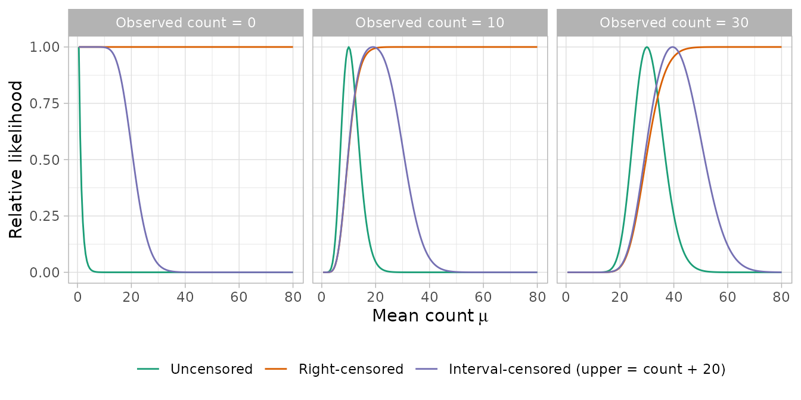
An uncensored count gives a likelihood that peaks at the observed count. A right-censored count only says that the mean is probably not much lower than the observed count. Any larger mean is about equally likely, and a censored zero is flat at 1. An upper bound adds information on the other side: means well above the upper bound become unlikely again.
Watson et al. (2023) used
simulations to show that this approach recovers relative abundance
trends better than raw CPUE or instantaneous catch rate corrections.
This censored Poisson approach is available in sdmTMB through the
censored_poisson() family. We also show an instantaneous
catch rate correction for comparison, censored negative binomial models,
and censored binomial and beta-binomial models, which limit each count
to the number of hooks.
The data
We’ll use the yelloweye dataset that comes with sdmTMB.
It contains Yelloweye Rockfish catch counts from the Hard Bottom
Longline Survey (South) off the west coast of Vancouver Island, British
Columbia. For each set, we know the number of hooks deployed and the
number of hooks that came back still baited.
d <- yelloweye |>
mutate(
prop_removed = 1 - bait_returned / hook_count,
fyear = as.factor(year),
log_depth = log(depth),
obs_id = as.factor(row_number())
)
head(d)
#> year longitude latitude X Y catch_count hook_count
#> 1 2007 -128.2567 50.86167 552.3141 5634.705 0 450
#> 2 2007 -128.3450 50.82000 546.1385 5630.013 0 445
#> 3 2007 -128.4433 50.81500 539.2161 5629.400 27 444
#> 4 2007 -128.8383 50.67667 511.4228 5613.882 0 451
#> 5 2007 -128.7433 50.68833 518.1306 5615.199 66 450
#> 6 2007 -128.7617 50.68833 516.8356 5615.194 0 443
#> bait_returned depth prop_removed fyear log_depth obs_id
#> 1 209 29.2 0.5355556 2007 3.374169 1
#> 2 279 21.9 0.3730337 2007 3.086487 2
#> 3 201 56.6 0.5472973 2007 4.036009 3
#> 4 254 212.1 0.4368071 2007 5.357058 4
#> 5 92 166.4 0.7955556 2007 5.114395 5
#> 6 213 173.7 0.5191874 2007 5.157330 6In some sets, nearly all baits were removed:
ggplot(d, aes(prop_removed)) +
geom_histogram(bins = 30) +
labs(x = "Proportion of baits removed", y = "Number of sets")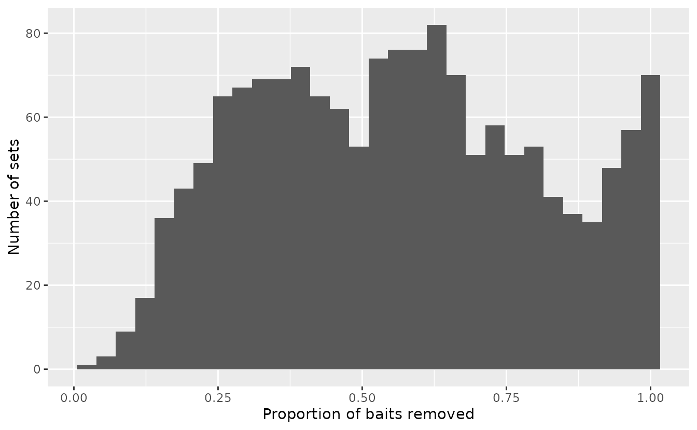
Choosing the breakdown point
Watson et al. (2023) suggest choosing (point at which one deems catch rate to be affected strongly by hook competition) by looking at how mean catch changes as bait removal increases. They fit a smoother of catch against the proportion of baits removed, accounting for year and with log hook count as an offset, and look for where the curve starts to decline. We can do this with mgcv:
library(mgcv)
fit_gam <- gam(
catch_count ~ s(prop_removed) + fyear + offset(log(hook_count)),
family = nb(), data = d
)
nd <- data.frame(
prop_removed = seq(min(d$prop_removed), 1, length.out = 200),
fyear = d$fyear[1],
hook_count = 1
)
p <- predict(fit_gam, newdata = nd, se.fit = TRUE)
nd <- mutate(nd, est = p$fit, se = p$se.fit)
ggplot(nd, aes(prop_removed, exp(est - max(est)))) +
geom_ribbon(aes(ymin = exp(est - 2 * se - max(est)),
ymax = exp(est + 2 * se - max(est))), alpha = 0.3) +
geom_line() +
geom_vline(xintercept = 0.83, lty = 2) +
labs(x = "Proportion of baits removed", y = "Relative mean catch")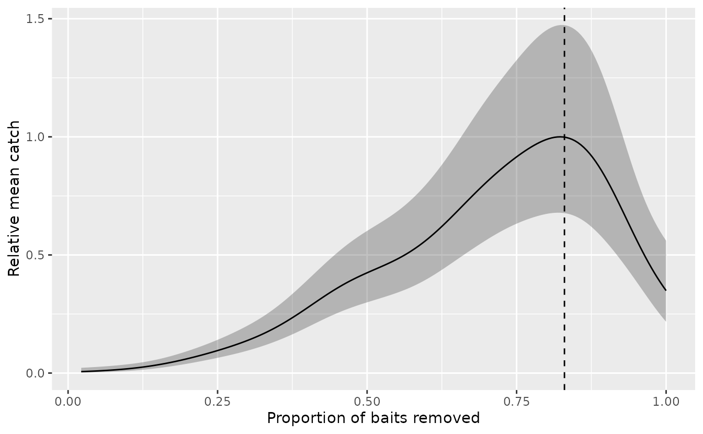
Mean catch rises with bait removal, because sets with more fish remove more baits, until about 0.83. After that it drops, consistent with hook competition.
Watson et al. (2023) backed up the visual check with a test. For each candidate , they compared the smoother at with the smoother at and asked whether mean catch at is significantly lower, and whether it is significantly more than 10% lower. They compared with 0.95 and with 0.85. Below we check a wider range of candidates. We build the contrast from the GAM’s linear predictor matrix, so the standard error accounts for the correlation between the two points on the smoother:
cand <- c(0.95, 0.9, 0.85, 0.8, 0.75, 0.7)
nd_test <- data.frame(prop_removed = c(1, cand), fyear = d$fyear[1], hook_count = 1)
X <- predict(fit_gam, newdata = nd_test, type = "lpmatrix")
C <- X[rep(1, length(cand)), ] - X[-1, ] # log(mean at p = 1) - log(mean at p*)
est <- drop(C %*% coef(fit_gam))
se <- sqrt(rowSums((C %*% vcov(fit_gam)) * C))
data.frame(p_star = cand, est = est, se = se) |>
mutate(
ratio = round(exp(est), 2),
lwr = round(exp(est - 1.96 * se), 2),
upr = round(exp(est + 1.96 * se), 2),
sig_decline = est + 1.96 * se < 0,
sig_decline_10 = est + 1.96 * se < log(0.9)
) |>
select(-est, -se)
#> p_star ratio lwr upr sig_decline sig_decline_10
#> 1 0.95 0.62 0.47 0.81 TRUE TRUE
#> 2 0.90 0.42 0.27 0.66 TRUE TRUE
#> 3 0.85 0.36 0.22 0.58 TRUE TRUE
#> 4 0.80 0.35 0.22 0.57 TRUE TRUE
#> 5 0.75 0.38 0.24 0.61 TRUE TRUE
#> 6 0.70 0.43 0.27 0.68 TRUE TRUEratio is mean catch at
divided by mean catch at
.
For Yelloweye Rockfish, mean catch at
is clearly lower than at any of these candidates, so the test doesn’t
pick one value by itself. It shows that hook competition matters, but
still has to be chosen within that range. One way to choose is to find
where the smoother peaks, and to get uncertainty on the peak by drawing
from the GAM’s coefficient distribution:
nd_peak <- data.frame(prop_removed = seq(0.6, 1, by = 0.005), fyear = d$fyear[1], hook_count = 1)
Xg <- predict(fit_gam, newdata = nd_peak, type = "lpmatrix")
set.seed(1)
b <- mgcv::rmvn(1000, coef(fit_gam), vcov(fit_gam))
peak <- nd_peak$prop_removed[apply(Xg %*% t(b), 2, which.max)]
quantile(peak, c(0.025, 0.5, 0.975))
#> 2.5% 50% 97.5%
#> 0.710 0.825 0.865The peak is near 0.83, with a 95% interval of about 0.71 to 0.87. We’ll proceed with 0.83.
pstar <- 0.83
mean(d$prop_removed >= pstar)
#> [1] 0.1725465About 17% of sets will be treated as censored. The proportion varies by year, and that variation is what biases an uncorrected index:
Censored Poisson models
Fitting
We specify censoring with the censored_upper argument in
sdmTMB(). It is a vector with one element per row of data
(or the name of a column in the data):
- a value equal to the observed count means the observation is not censored;
-
Infmeans the observation is right-censored with no upper bound; - a value greater than the observed count means the observation is interval-censored between the observed count and that value.
The response is the observed catch count.
upr <- ifelse(d$prop_removed >= pstar, Inf, d$catch_count)We’ll fit a model with year effects, a quadratic effect of log depth,
a spatial random field, and an observation-level random intercept,
(1 | obs_id). The observation-level intercept makes this a
Poisson-lognormal model and accounts for overdispersion, as in Watson et al. (2023). The offset is log
hook count, so the index is relative catch per hook.
First, a standard Poisson model that ignores hook competition:
mesh <- make_mesh(d, c("X", "Y"), cutoff = 10)
fit_pois <- sdmTMB(
catch_count ~ 0 + fyear + poly(log_depth, 2) + (1 | obs_id),
offset = log(d$hook_count),
data = d,
mesh = mesh,
family = poisson(),
time = "year",
spatial = "on",
spatiotemporal = "off"
)Now the censored version. We only need to change the family and pass
censored_upper:
fit_pois_cens <- update(
fit_pois,
family = censored_poisson(),
censored_upper = upr
)
sanity(fit_pois_cens)
fit_pois_cens
#> Spatial model fit by ML ['sdmTMB']
#> Formula: catch_count ~ 0 + fyear + poly(log_depth, 2) + (1 | obs_id)
#> Mesh: sdmTMBmesh (isotropic covariance)
#> Time column: year
#> Data: data.frame
#> Family: censored_poisson(link = 'log')
#>
#> Random intercepts and/or slopes:
#>
#> Conditional model:
#> Groups Name Variance Std.Dev.
#> obs_id (Intercept) 2.38 1.54
#>
#> Conditional model:
#> coef.est coef.se
#> fyear2007 -4.65 0.79
#> fyear2009 -5.02 0.78
#> fyear2011 -4.28 0.77
#> fyear2014 -5.47 0.78
#> fyear2016 -5.44 0.78
#> fyear2018 -4.74 0.79
#> fyear2020 -5.11 0.78
#> fyear2022 -4.75 0.78
#> poly(log_depth, 2)1 -10.87 4.50
#> poly(log_depth, 2)2 -27.77 3.42
#>
#> Matérn range: 60.26
#> Spatial SD: 2.94
#> ML criterion at convergence: 4177.946
#>
#> See ?tidy.sdmTMB to extract these values as a data frame.This, and every censored model below, is a true interval-censoring likelihood only if which sets are censored, and their bounds, carry no extra information about the parameters. Hook competition doesn’t censor counts at random: it reduces catches through a process that also depends on the abundance of the target and other species. The censored likelihood is therefore best thought of as a working likelihood, and how well it recovers trends depends on how competition actually reduces catches (see the simulations in Watson et al. 2023).
Adding an upper bound
When many observations are censored and the data are limited, the
right-censored model may not converge. Watson
et al. (2023) describe an optional upper bound on the
censored counts (their Supplementary Material S.3), turning
right-censored observations into interval-censored ones. The bound adds
the expected number of target-species catches “missed” because of hook
competition, based on the number of hooks emptied past the breakdown
point. The function get_censored_upper() calculates this
bound:
upr_bounded <- get_censored_upper(
prop_removed = d$prop_removed,
n_catch = d$catch_count,
n_hooks = d$hook_count,
pstar = pstar
)
fit_pois_cens_bounded <- update(
fit_pois,
family = censored_poisson(),
censored_upper = upr_bounded
)Watson et al. (2023) also
suggest treating the largest catch counts each year as uncensored,
regardless of bait removal, to help convergence. To do that, set
censored_upper equal to catch_count for those
rows.
An instantaneous catch rate offset
A more traditional correction is the instantaneous catch rate (ICR) (Rothschild 1967; Somerton & Kikkawa 1995), which Watson et al. (2023) also compared against. It assumes each hook loses its bait at a constant rate , to any species or other causes, of which the target species makes up a rate . At the end of the soak, the proportion of hooks still baited is , and a hook holds the target species with probability . The expected catch on hooks is therefore
so with from the baits returned, a Poisson model with an offset of estimates the per-hook catch rate . The fraction is 1 when no baits are removed and falls towards 0 as more are removed. It is undefined when no baits come back, so we treat those 25 sets as if one bait came back. This is an arbitrary choice, and it affects the sets most affected by competition.
baited <- pmax(d$bait_returned, 1) / d$hook_count
icr <- ifelse(baited < 1, (1 - baited) / -log(baited), 1)
fit_icr <- update(fit_pois, offset = log(d$hook_count * icr))Unlike censoring, the ICR applies this model of competition to every set, including sets with little bait removal.
Comparing indices
We’ll predict over the survey grid hbll_s_grid and
calculate an index for each model. We set the offset to 0 for prediction
(i.e., one hook) and leave out the observation-level random intercepts
with re_form_iid = NA.
grid <- replicate_df(hbll_s_grid, "year", unique(d$year)) |>
mutate(fyear = as.factor(year), log_depth = log(depth))
get_ind <- function(fit, label, ...) {
ind <- get_index(
fit, newdata = grid, offset = rep(0, nrow(grid)),
predict_args = list(re_form_iid = NA),
bias_correct = TRUE, ...
)
mutate(ind, model = label)
}
ind <- bind_rows(
get_ind(fit_pois, "Poisson"),
get_ind(fit_pois_cens, "Censored Poisson"),
get_ind(fit_pois_cens_bounded, "Censored Poisson (upper bound)"),
get_ind(fit_icr, "ICR Poisson")
)Since these are relative indices, we’ll scale each by its geometric mean before plotting:
scale_index <- function(ind) {
ind |>
group_by(model) |>
mutate(gm = exp(mean(log(est))), across(c(est, lwr, upr), \(x) x / gm)) |>
ungroup() |>
select(-gm)
}
plot_index <- function(ind) {
ggplot(ind, aes(year, est, colour = model, fill = model)) +
geom_ribbon(aes(ymin = lwr, ymax = upr), alpha = 0.15, colour = NA) +
geom_line() +
geom_point() +
labs(x = "Year", y = "Relative index", colour = NULL, fill = NULL) +
theme(legend.position = "bottom")
}
ind <- scale_index(ind)
plot_index(ind)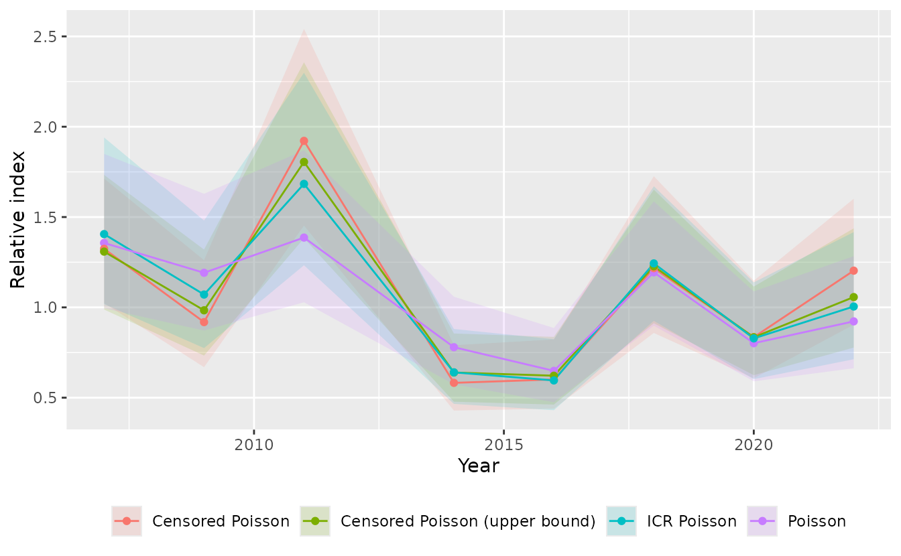
The censored models differ most from the uncensored Poisson model in years with an unusually high or low proportion of censored sets. For example, 2011 had the highest proportion of saturated sets, and its index is higher once we account for hook competition. 2014 had very few saturated sets, and its index is lower relative to the other years. Here, the upper bound mostly has a modest effect, pulling some years (e.g., 2022) partway back towards the Poisson estimates by limiting how large the censored counts can be. The ICR index moves in the same direction as the censored indices, but generally by less.
Censored negative binomial models
Instead of an observation-level random intercept, a negative binomial
accounts for overdispersion with a dispersion parameter
.
A negative binomial count is a Poisson count whose rate is gamma
distributed, so each set’s per-hook catch rate is now gamma instead of
lognormal. The censored_nbinom2() and
censored_nbinom1() families differ in how the variance
grows with the mean
:
- NB2: . The gamma catch rate has a constant coefficient of variation, like the lognormal catch rate of the Poisson-lognormal model.
- NB1: . The coefficient of variation of the gamma catch rate decreases as the mean increases.
Like the censored Poisson, these have no upper limit on the count,
and they use the same censored_upper vector:
fit_nb2_cens <- sdmTMB(
catch_count ~ 0 + fyear + poly(log_depth, 2),
offset = log(d$hook_count),
data = d,
mesh = mesh,
family = censored_nbinom2(),
censored_upper = upr,
time = "year",
spatial = "on",
spatiotemporal = "off"
)
fit_nb1_cens <- update(fit_nb2_cens, family = censored_nbinom1())
sanity(fit_nb2_cens)
sanity(fit_nb1_cens)Each set’s per-hook catch rate has mean , so with an offset of 0 (one hook), the index is the sum of the mean per-hook catch rate over the grid. No observation-level random intercepts need to be left out, and no other adjustment is needed.
The censored negative binomial indices move in the same direction as the censored Poisson index:
ind_nb <- bind_rows(
get_ind(fit_nb2_cens, "Censored NB2"),
get_ind(fit_nb1_cens, "Censored NB1")
)
ind_nb <- scale_index(ind_nb)
plot_index(bind_rows(ind_nb, filter(ind, model == "Censored Poisson")))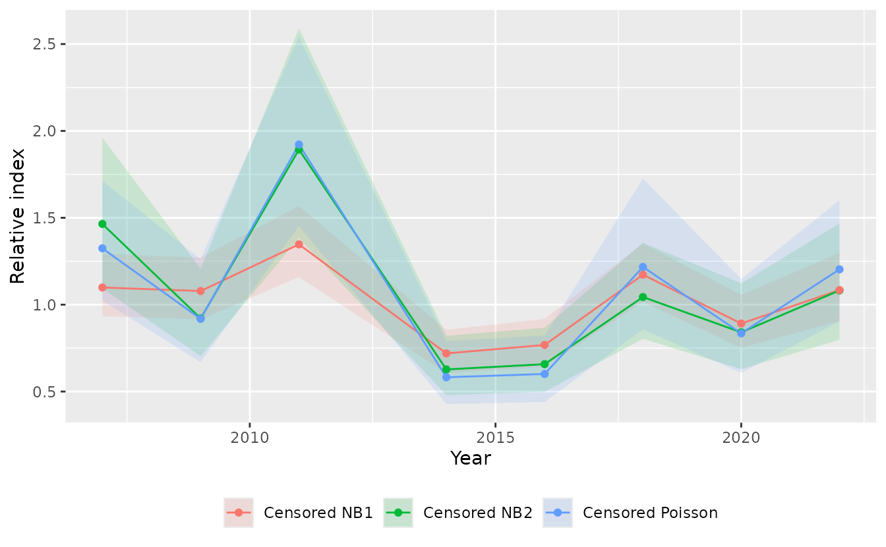
The NB2 index is close to the censored Poisson-lognormal index, since both assume the same relative variability in catch rate at any mean. The NB1 index changes less between years. We’ll see below that it’s very similar to the censored beta-binomial index, and the two models fit about equally well.
Limiting counts to the number of hooks
A Poisson model has no upper limit on the count, but a set can’t catch more fish than it has hooks. Binomial and beta-binomial models with the number of hooks as the number of trials respect that limit.
A censored binomial
With a complementary log-log link, the probability that a hook
catches the target species is
,
where
is the linear predictor. This is what we would expect if each hook
caught fish as a Poisson process with rate
and could hold at most one fish, since then
.
As in the Poisson model, an observation-level random intercept,
(1 | obs_id), accounts for overdispersion, so each set’s
is lognormal. The model is therefore a Poisson-lognormal model of the
per-hook catch rate with at most one fish per hook.
The censored_binomial() family works like
censored_poisson(), with the number of hooks supplied
through weights. The latent count without hook competition
still can’t exceed the number of hooks, so a right-censored set has a
count between the observed count and the number of hooks:
where
is the number of hooks. This gives every censored set an upper bound, so
we can use the same censored_upper vector with
Inf for censored sets and don’t need to calculate one.
Counts must be whole numbers, and a non-integer bound means the largest
count it allows (e.g., 2.5 means 2).
fit_binom_cens <- sdmTMB(
catch_count ~ 0 + fyear + poly(log_depth, 2) + (1 | obs_id),
weights = d$hook_count,
data = d,
mesh = mesh,
family = censored_binomial(link = "cloglog"),
censored_upper = upr,
time = "year",
spatial = "on",
spatiotemporal = "off"
)
sanity(fit_binom_cens)The likelihood of each censored set is a sum over every possible count in its interval, so fitting can be slower than for the censored Poisson when sets have many hooks.
For the index, we want the per-hook catch rate
,
not the catch probability
,
which can’t exceed 1 and so levels off as density increases.
derived_link = "log" sums
over the grid instead of
.
Leaving out the observation-level random intercepts with
re_form_iid = NA gives the median of each lognormal catch
rate, which is a constant multiple of its mean, so the relative index is
the same as one based on the mean catch rate, as for the
Poisson-lognormal model.
A censored beta-binomial
A beta-binomial accounts for overdispersion differently: each set’s
catch probability
follows a beta distribution with mean
and a dispersion parameter
,
instead of an observation-level random intercept. The
censored_betabinomial() family works like
censored_binomial():
fit_bb <- sdmTMB(
catch_count ~ 0 + fyear + poly(log_depth, 2),
weights = d$hook_count,
data = d,
mesh = mesh,
family = betabinomial(link = "cloglog"),
time = "year",
spatial = "on",
spatiotemporal = "off"
)
fit_bb_cens <- update(
fit_bb,
family = censored_betabinomial(link = "cloglog"),
censored_upper = upr
)
sanity(fit_bb_cens)To speed up fitting, the censored beta-binomial sums over the counts inside each interval or outside it, whichever is shorter, and checks the precision of each set after fitting.
With derived_link = "log", the index sums
.
Because the beta-binomial mixes over the catch probability rather than
the catch rate, this isn’t proportional to the mean per-hook catch rate
in general. The mean rate is
,
where
is the digamma function, and how much it exceeds
depends on
and
.
We can check how much this matters here by calculating both over the
grid:
phi <- exp(fit_bb_cens$model$par[["ln_phi"]])
rates <- predict(fit_bb_cens, newdata = grid) |>
mutate(
p_bar = 1 - exp(-exp(est)),
rate_mean = digamma(phi) - digamma((1 - p_bar) * phi),
rate_eta = -log(1 - p_bar)
)
quantile(rates$p_bar, c(0.5, 0.99))
#> 50% 99%
#> 0.02229041 0.27735047
rates |>
group_by(year) |>
summarise(ratio = sum(rate_mean) / sum(rate_eta)) |>
mutate(ratio = round(ratio / mean(ratio), 4)) |>
as.data.frame()
#> year ratio
#> 1 2007 1.0003
#> 2 2009 1.0002
#> 3 2011 1.0011
#> 4 2014 0.9990
#> 5 2016 0.9992
#> 6 2018 1.0005
#> 7 2020 0.9996
#> 8 2022 1.0002Even though is large in some grid cells, the mean rate is close to a constant multiple of here, so the relative index is nearly the same either way.
Comparing indices
ind_binom <- bind_rows(
get_ind(fit_binom_cens, "Censored binomial", derived_link = "log"),
get_ind(fit_bb_cens, "Censored beta-binomial", derived_link = "log")
)
ind_binom <- scale_index(ind_binom)
plot_index(bind_rows(ind_binom, filter(ind_nb, model == "Censored NB1"),
filter(ind, model == "Censored Poisson")))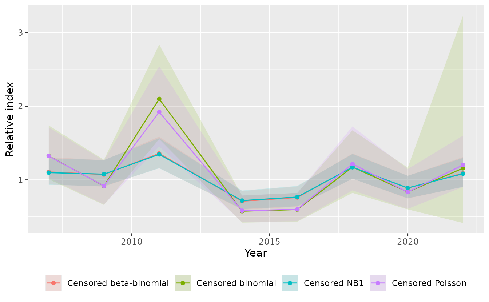
The censored binomial index is very close to the censored Poisson index. With catch probabilities this low, a limit of one fish per hook rarely matters, and the two models account for overdispersion in the same way. The censored beta-binomial moves the index in the same direction as the other censored models, e.g., up in 2011 and down in 2014, but by less here, and is very close to the censored NB1 index. It accounts for overdispersion differently, so differences in its index and uncertainty aren’t only due to the upper limit on the count.
Comparing models
The censored likelihoods are probabilities of the same intervals of counts, so their marginal AIC values are comparable (comparisons with the uncensored models, the ICR model, or the bounded censored Poisson are not, because they treat the observations differently):
AIC(fit_pois_cens, fit_nb2_cens, fit_nb1_cens, fit_binom_cens, fit_bb_cens)
#> df AIC
#> fit_pois_cens 13 8381.891
#> fit_nb2_cens 13 8189.982
#> fit_nb1_cens 13 8080.484
#> fit_binom_cens 13 8355.757
#> fit_bb_cens 13 8080.877We can compare how well simulated data from each model reflect the properties of the observed data:
set.seed(1)
s_bb <- simulate(fit_bb_cens, nsim = 300, type = "mle-mvn")
s_binom <- simulate(fit_binom_cens, nsim = 300, type = "mle-mvn")
s_pois_bounded <- simulate(fit_pois_cens_bounded, nsim = 300, type = "mle-mvn")
s_pois <- simulate(fit_pois_cens, nsim = 300, type = "mle-mvn")
s_nb1 <- simulate(fit_nb1_cens, nsim = 300, type = "mle-mvn")
s_nb2 <- simulate(fit_nb2_cens, nsim = 300, type = "mle-mvn")
dharma_residuals(s_bb, object = fit_bb_cens)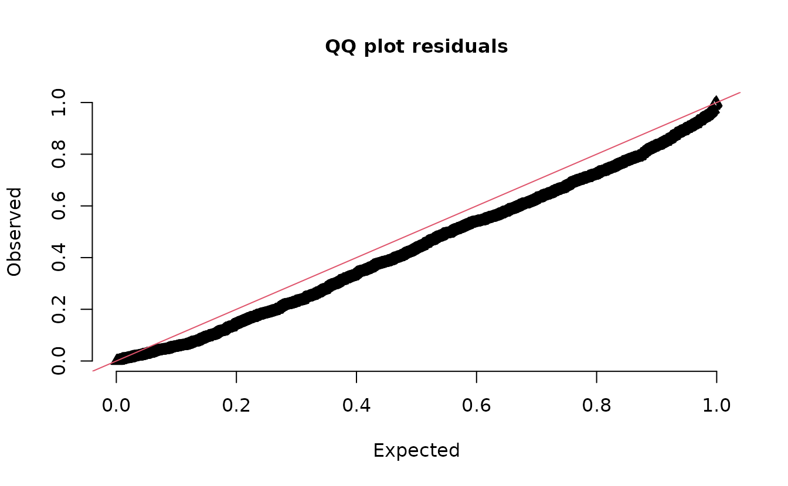
dharma_residuals(s_binom, object = fit_binom_cens)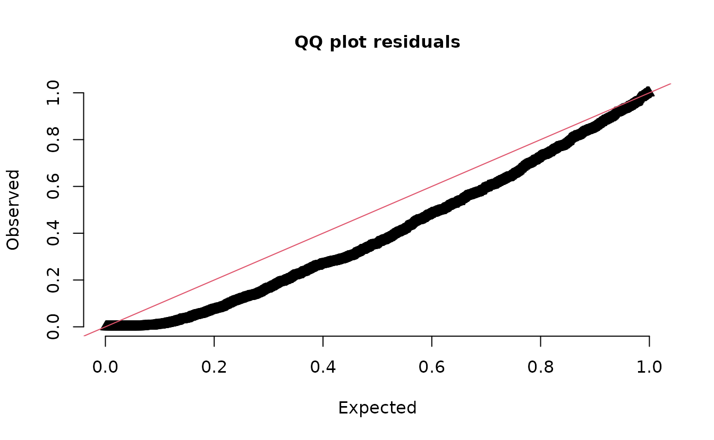
dharma_residuals(s_pois_bounded, object = fit_pois_cens_bounded)
dharma_residuals(s_pois, object = fit_pois_cens)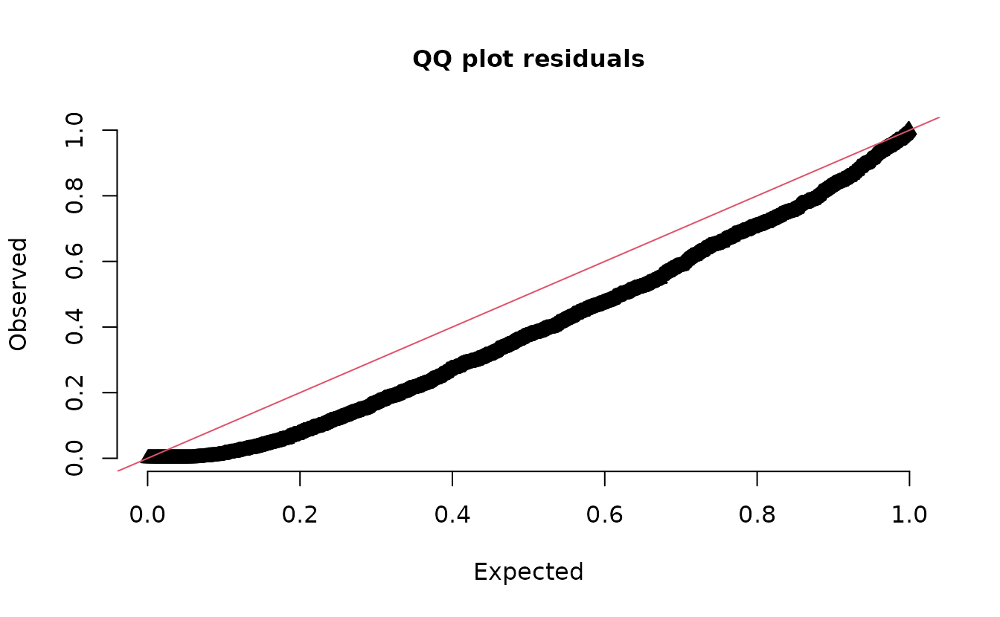
dharma_residuals(s_nb1, object = fit_nb1_cens)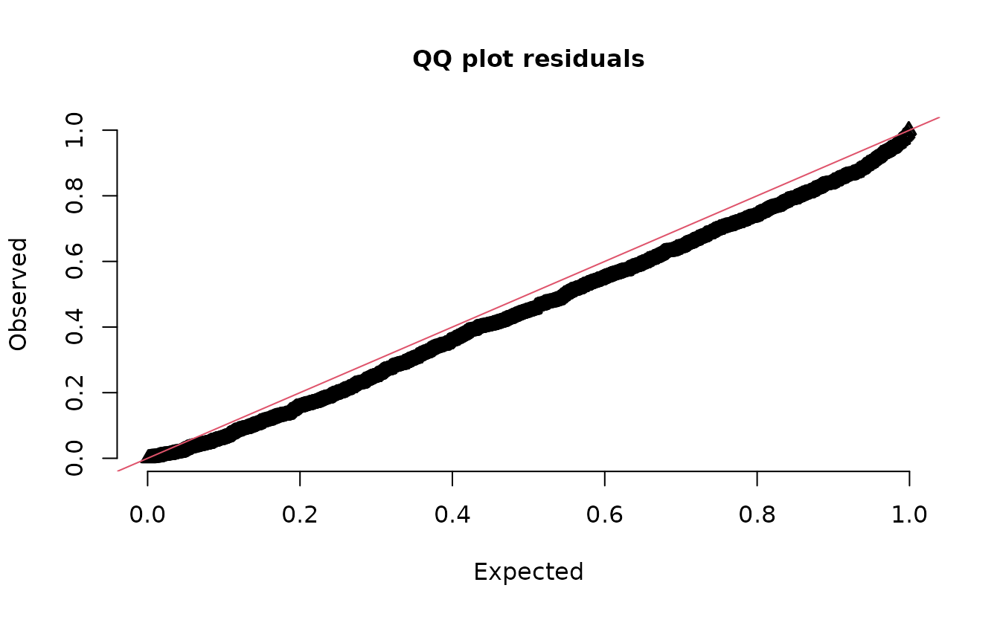
dharma_residuals(s_nb2, object = fit_nb2_cens)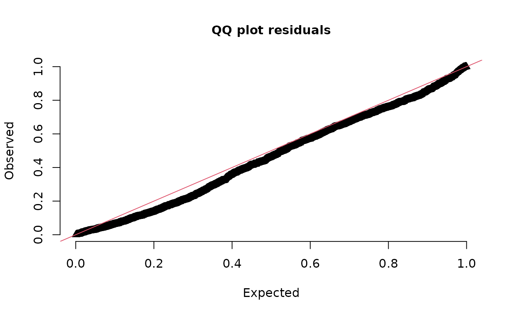
Note how these families have different implications for the maximum number of fish:
max(s_bb) # can't exceed the number of hooks
#> [1] 406
max(s_binom) # can't exceed the number of hooks
#> [1] 434
max(s_pois_bounded) # not limited: `censored_upper` only affects the likelihood
#> [1] 422
max(s_pois) # not limited
#> [1] 818
max(s_nb1) # not limited
#> [1] 665
max(s_nb2) # not limited; very high
#> [1] 6143Taken together, it probably makes sense here to select either the censored beta-binomial or the censored NB1 model. They have nearly the same AIC, which is the lowest of the models tested, and their QQ plots look better than those of most other families. The NB2 has a reasonable QQ plot, but its AIC is considerably higher and it can simulate far more fish than there are hooks. These results won’t hold for all datasets. If the variance grew closer to quadratically with the mean, the Poisson-lognormal, binomial-lognormal, or NB2 models might represent the data better. In practice, we would examine the models further, e.g., with DHARMa residuals against covariates and other posterior predictive checks.
Summary
- Calculate the proportion of baits removed for each set.
- Choose a breakdown point , e.g., by plotting a smoother of catch against bait removal.
- Build a
censored_uppervector: the observed count for uncensored sets andInf(or an upper bound) for sets at or above . - Fit with
family = censored_poisson()andcensored_upper = ..., ideally with an observation-level random intercept to account for overdispersion, or withfamily = censored_nbinom2()orcensored_nbinom1(). - To limit each count to the number of hooks, fit with
family = censored_binomial(link = "cloglog"), the number of hooks asweights, and an observation-level random intercept, or withfamily = censored_betabinomial(link = "cloglog"). - For binomial and beta-binomial models, fit with the
clogloglink and calculate the index withderived_link = "log"so it sums the per-hook catch rate rather than the catch probability. - For the beta-binomial, check that the mean per-hook catch rate,
,
is close to a constant multiple of
across years, as above. Otherwise, the relative index from
derived_link = "log"may not track the mean catch rate. - Compare models with DHARMa residuals and other posterior predictive
checks. Compare AIC only among censored models that use the same
censored_upperintervals. - Treat the censored likelihood as a working likelihood: hook competition doesn’t censor counts at random, so how well it recovers trends depends on how competition actually reduces catches.
See Watson et al. (2023) for the full method (with the censored Poisson in a non-spatial model), simulation tests, and an application to 11 species.